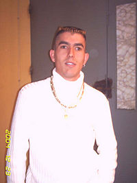
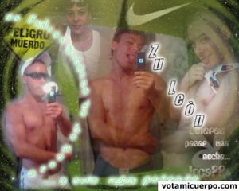
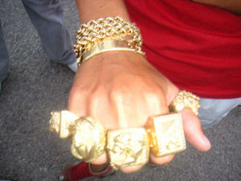
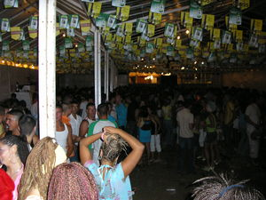
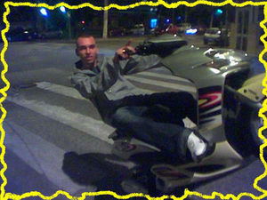
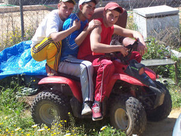
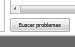
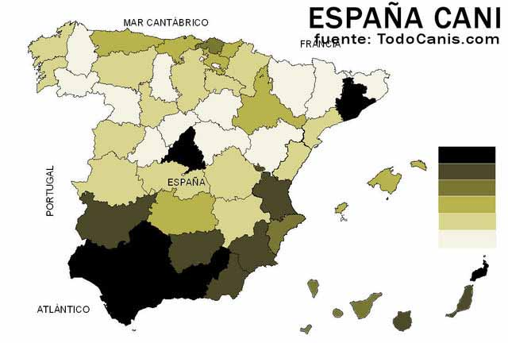

Cani
 De: La Frikipedia, la enciclopedia extremadamente seria.
De: La Frikipedia, la enciclopedia extremadamente seria.
| De la serie tribus urbanas del mundo:
|
| Cani
|
Ejemplo de la tribu

|
| Las drogas han permitido a este individuo mejorar su experiencia IMax. © Viruete.
|
|
| Hábitat
|
Cualquier calle de espiña.
|
| Inteligencia
|
-Absolutamente nada, 0, no tienen cerebro...
|
| Frase favorita
|
-Iyo, ¿tiene papé?.
|
| ¿Peligroso?
|
Si van en grupos y estás solo sí.
|
| Obsesión
|
El oro y el reggaeton.
|
| Notas
|
Normalmente muy malas.
|
«Y llegará el día en que un pueblo de bastardos amantes del oro amenazarán con destruir todo lo bueno que hay en el mundo, ¡Bienaventurado aquel que entonces entone el salmo metalero y se lance contra estas hordas!»
~ La Biblia prediciendo su llegada
También conocido por el nombre cientifico "Homo Escorius Canis", es una especie de escoria adicta al oro y al Ruido Extremadamente Gay y Grotesco Altamente Estúpido y Tonto que Obstruye Neuronas (reggayton) con una inteligencia equiparable a la de una rata con síndrome de Down (lo sentimos mucho, pero el escritor de este artículo está exagerando. En realidad, la inteligencia de un cani es mucho más baja) y que por desgracia puebla las calles de nuestro país. Conocidos genéricamente como "comepellas" (donde pella es sinónimo de mierda). También es conocido como angango (en Puerto Real), kie, surmanito, wily (en Sevilla) burrako, villico, merdellón (en Málaga), doncho o metrogitano(Granada) kie, Quillo, Garrulo (en Cataluña y en Murcia), Socio (sorcio, soncio) o hueso (también huenso) (Almería), marroneros (La Ribera-Valencia), macoys (en Extremadura), jarcores (en Alicante), pokero (en Madrid), yonis, ghari, malote o kiñista, Bajunos (parte sur de Cádiz), gambiteros (en Albacete), mascachapas (Cuenca) tártaro, kinki en Jerez de la Frontera, Tostá (en Tomares-Sevilla-, haciendo referencia a la semejanza entre el corte de pelo y a la rebanada de pan mañanera o tostada),Zumbacabras (en mi pueblo), pringaos (Boyuyo), Gichos (Salamanca).
También existen ejemplares "femeninos" más conocidas por Jessis, "Yenis", Juanis, Vanes, Gharis (en la zona central de Galicia, comarca Tabeirós-Terra de Montes), nombres más exóticos como Elisabeth, Yasury, Roxana, o cualquier nombre compuesto llegado desde Sudamérica, Chanis, Hambas, Garrulas, Calorras, Calentitas o Payas Ahitanás, Yulis, etc.
Estudiosos de la "cultura cani" o "estilo comepellas" definen a estos seres como: Persona, animal o cosa, normalmente animal o cosa, que hace o dice cosas que ni sabe lo que hace, ni sabe lo que dice. Por eso, se creará una campaña para coger todos sus podridos ``cerebros´´, y crear una barrera anti meteoritos alrededor de la Luna y la Tierra. Están tan podridos sus ``cerebros´´ (aparte de que la mayoría no tienen), que sus cabezas serivirían para tocar reggaeton. De hecho, la mayoría de las canciones de este asqueroso estilo (creemos que músical), utilizan o bien sus cabezas, o los culos de las bailadoras (que son mas putas que bailadoras... pero en fin). También se les conoce como la rama evolutiva perdida del mono. Muchos experimentos científicos explican, deducen y aprueban, que estos extraños, idiotas e imbéciles seres son el resbalón eslabón perdido de la cadena evolutiva, el cerebro en el principio de esta rama, desapareció o se pudrió con el paso de los años.
Siglas del CANI
Según la RAE y gran parte de la población mundial, la palabra CANI tiene diferentes significados, también se pueden apreciar varios lemas de la sociedad cani:
- Capullo Atontao Negao e Inutil
- Caca Amorfa No Inteligente
- Cabrón Analfabeta No Inteligente.
- Cagon Anormal No Inteligente
- Capullo Adolescente No Inteligente.
- Cabroncete Amariconao, Niñato Irritao.
- Cosa Anormal Nacida Inconscientemente.
- Cagao Atontao Niñato Irreversible.
- Cosa Andante No Identificada.
- Capullo de Alelí Necesariamente Idiota.
- Cuervo Asqueroso Nulo y con Ilusión.
- Cirrópodo Antropófago sin Neuronas Inteligentes .
- Cancerígeno Además de Niñato Involucionista.
- Camello Andante sin Nada que Inyectarse.
- Cosa Anormal Normalmente Ignorada.
- Cenicero Andante Normalmente Ignorante.
- Cerdos Anormales Nunca Inteligentes.
- Catástrofe Antihumana Nunca Investigada.
- Catetos Auctóctonos sin Ninguna *Inteligencia.
- Cabrones Andantes con Nenas Imbéciles.
- Censurados por Anormales Niñatos e *Ignorantes.
- Camarón les Amenaza con Nuestras Ideas.
- Cábala Anti Nacimiento de Inteligencia.
- Cabrones Anormales No Inteligentes.
- Criatura Animada No Inteligente.
- Camarón Absorbe Nuestra Inteligencia.
- Compro Anillos Nike o Intelecto.
- Cagamos Adentro de Nuestro Interior.
- Culpa A Nuestra Inteligencia.
- Chaval Anormal Necesitado de sentIdo común
Enfermedades propias y cualidades físicas
Los canis poseen enfermedades psíquicas y físicas propias como el "sarancanión", consistente en la aparición de acné en cualquier lugar del cuerpo. También parece ser que su tolerancia a las temperaturas es mayor a la del resto de los mortales, ya que si tiene un plumas de "el Niño" bonita no se la quitaran ni en pleno Agosto, debido a que su valor es incalculable para sus cortas mentes. Por el contrario, si tiene un vientre esculpido podrás encontrarlos hasta en Nochevieja sin camiseta (ellos no llegarán a notar frío alguno). Suelen llevar gafas de sol, adquiridas en el top manta, incluso de noche, pudiendo incluso ver.
Su cráneo parece ser más grueso, ya que casi ningún cani utiliza el casco.
Hay quien dice que su ADN esta mutado por culpa de la lefa de penedector, o incluso que el penedector dejo embarazadas a sus madres, pero aun no esta demostrado que esto sea siempre así.
Apariencia
Primero estudiaremos la apariencia cani. Sus funciones fisiológicas parecen ser análogas a las del resto de la población, exceptuando la de fumar hachís. En esto nos extenderemos más adelante.
Entre sus características más importantes y comunes destacan:
- Gorra de béisbol: O en su defecto visera, a ser posible de la marca Tn. De día, de noche, con lluvia, con sol, es indiferente. Creemos que esto se debe a una conducta adaptativa-social, que le ha hecho depender de la prenda ya que los rayos gamma del sol destruyen el tejido epitelial (joder, me ha costado escribirlo) de su rostro y cabeza, aunque otra teoría sugiere que sus gorras actúan como la de Mario (les hacen más resistentes a los golpes externos). En Canarias, su manera de taparse cuando el pelo les crece una semana después de pelarse -ya que consideran que hay que repararse el peinado urgentemente o cuando pillen algo de dinero- es poniéndose las denominadas gorras TN de la marca Nike. En Galicia y Cataluña no suelen ser tan marquistas y se compran la gorra en ferias o mercadillos. Aparte, los canis suelen llevar la visera de la gorra hacia arriba porque se cree que así sintonizan mejor el canal digital, y a mientras más alta lleve la visera el cani más rango social dentro de su grupo adquiere.
- Pelado cenicero (No visible en la ilustración): El formato del pelo estándar para todas las especies de canis conocidas es el pelado cenicero. Otras variantes pueden ser el pelo imitando a las bandas negras de EEUU de los 80, pero no está tan extendido. Da igual que el tío sea rubio y se le vean hasta las ideas (alegóricamente, porque esta raza no piensa ni tiene ideas), es un patrón de conducta estándar. Puede verse complementado por dibujos en el pelo como el símbolo del dólar, rayas, o su nombre. Triste pero cierto. A veces los canis portan el típico pelao hurón, consistente en raparse solo los laterales de la cabeza y dejarse el pelo de la nuca largo, de tal manera que parecen llevar un hurón acostado en sus cabezas.
- Pelado Jonathan: Llamado así por su parecido con el hijo de Aida. Se caracteriza por dejar crecer las "tracas" largas hasta liarse y enredarse, suelen vivir animales en ellas.
- El chándal: A no ser que estén "arreglaítos", el uniforme reglamentario es este. Funcional para que no se noten los chinazos. La marca recomendada es Nike en especial su marca de alta costura, los "TN" aunque pueden verse otros tipos. Se puede llegar a admitir ropa no-chándal, pero con unas condiciones: Ésta debe ser de colores chillones y/o con estampados de dragones o cosas similares (marcas Sonique o Bulldog). Ejemplo de vestimenta no-chándal común son unos pantalones blanco metalizado con una raya azul chillón en el lateral, y un dragón verde y rojo estampado en los bajos. Lo más importante en la vestimenta (y en el cani en general), es que sea hortera. Aunque también hay quien lleva la bandera de la República Monárquica Española (¿?). Un rasgo que denota estilo es llevar una pernera del pantalón levantada por la rodilla, o los bajos del chándal dentro de los calcetines. Por supuesto se puede distinguir que un pantalón de chándal es para garrula ya que en condiciones de lluvia y tras la aparición de los temidos charcos estos pantalones tienen la peculiaridad de que en vez de mojarse como todos (solo un poco por abajo) absorben el agua hasta la altura de la rodilla o si el pantalón es de buena calidad hasta el muslo.
- El abrigo: No hace más de dos años que se ha puesto de moda que la mayoría de canis lleven esos anoraks típicos del Bershka o Pimkie (también de otras tiendas) que son gruesos, generalmente de color blanco o negro, y con una capucha de esquimal para parecer que vienes del Polo Norte.
- El móvil con altavoz: Una de las novedades actuales de todos los canis son sus fieles teléfonos multimedia. A pesar de todas las funciones que ofrecen dichos móviles los canis sólo usan dos: el Bluetooth y el altavoz. El Bluetooth lo utilizan para poder pasarse mp3 de flamenquito y bakalao para después llevarlo a todo trapo en el metro para así llamar la atención y despertar la vergüenza ajena de los demás viajeros. Debido a la corta comprensión de los canis, suelen tener la creencia de que el Bluetooth tiene un radio de alcance de 1000 kilómetros a la redonda y que no deberían tener problemas al pasarle un mp3 a su primo el del pueblo.
 los canis poseen documentos de identidad personalizados.
 Toma sellos. Muérete de envidia, Naruto y cía.
- Los oros: Uno de los puntos débiles de los canis es la convergencia genética de su especie con las urracas. En especial, su aprecio a los metales brillantes, como el cromo o el oro. Cuanto más hortera y grande sea un atuendo (véase pendientes con formas de bellota o de puño, y sellos de oro de medio kilo), más posibilidades de que le guste a un cani, especialmente estilo barroco.
- Zapatillas de muelles: Antes con calzado deportivo bastaba, pero Nike ha sacado al mercado un nuevo concepto en moda juvenil: Los zapatos de muelles. No, no son turborreactores ni sirven para volar: Es sencillamente el paradigma de lo hortera. La única persona que puede lucir este calzado con dignidad es Hugh Laurie en la serie House, donde interpreta al doctor Gregory House. En Tenerife esta chapuza inventada por Nike no es muy habitual, ya que, lo que más predomina son los llamados tiburones, también como no, de dicha marca. Aunque también algunos usen los Reeboks negros al ser tan desgraciados de no poderse comprar los tiburones de unos 200 euros en foot, aunque en caso de deseperación, se las recompran a otros canis [1]. En la zona septentrional de España, y no debido a las intensas lluvias invernales, el cani o ghari también puede llevar como calzado las botas "Art" que no son una obra de arte precisamente. Son plataformas estilo botas de skinhead pero más horteras todavía, las hay beige, negras o rojas. Las llevan mejor en verano que en invierno, y prefieren los tenis mejor en invierno que en verano.
- Las plataformas: Algunas yenis llevan esas plataformas (horribles) de color negro (generalmente) que parecen una bamba pero con 10cm más de alto en cada suela. De este modo, consiguen parecer más altas e imponer más "respeto". Pero esas plataformas no están a la vista de todos, sinó que están cubiertas por unos pantalones de pata de elefante, de esos que se llevaban hace tiempo y que han pasado de moda.
- Pantalones: Acostumbran a ser chandales falsos, sea invierno y haga frío, o en pleno calor de verano. Nunca llevan bermudas. Si llevan otra cosa son vaqueros. Si ves a un ejemplar de estos, podras observar que llevan los pantalones bajos, también denominados cagados. Puede ser por dos cosas. Puede ser que te hayas encontrado un cani que no sepa contar y no use su talla. O también puede ser que no sepan desatarse o atarse el botón del pantalón. Si los ves así, siempre es por una de estas dos razones. Además, suelen utilizar para los bajos de los pantalones elásticos (de caucho) para remangarlos... Así se podrá ver sus playeras Converse o derivadas... (común en Canarias).
- Calzoncillos: Debido a que el estilo del pantalón cagado lleva la cinturilla de la prenda a la altura del muslo, los canis consideran altamente importante revelar la ropa interior en todo momento. Los calzoncillos han de ser siempre boxers de colores y combinaciones chillonas, tales como rosa fucsia y/o verde fosforito, y con algún texto o frase estampada. Para ayudar a que se vea más, la cintura del boxer debe ir siempre tan alta como baja esté la del pantalón, siendo lo más común a la altura del ombligo o más arriba.
- Otros: Principalmente pendientes de distintos tipos. En especial los aros de oro y los brillantes en una o dos orejas al estilo de Beckham. Algunos llevan argollas de acero quirúrgico bastante anchas que hacen que la piercings de oro (por supuesto) en el labio inferior/superior/lateral izquierdo y/o derecho, o en los 4 lados a la vez.
- Personalidad: personalidad, imitando a sus ídolos, normalmente futbolistas, cantantes, etc...
- Poses fotográficas: La pose tradicional de estos individuos consiste en cruzar las manos tras la espalda, a la altura del culo (al estilo de mutenroi), inclinar exageradamente el pecho hacia adelante, hombros hacia abajo (así parece que tienen musculo en los lados del cuello), la cabeza hacia atrás y ligeramente torcida con una mueca de desdén, o en su defecto cara de prostituta o de Derek Zoolander, tras lo cual le dan al botón (no, joder, a ese no, ¿ni una foto sabemos hacer?). El efecto de esta postura (extremadamente incomoda por cierto) es el de una especie de Puyol (el del Barça); es decir, les hace parecer que esta superpetados, lo cual mola cantidad a las Jenis y a las Wendo, y da cierta envidia a los Jonatanes. Otra pose es simplemente hacer un collage con las fotos de toda la manada (que por cierto no pegan la una con la otra ni con cemento industrial) y poner debajo de cada una sus apodos tales como: "sU NeNe", "sE KabeSa", "sA LoKa", "sE PiTu", "sE RaU", "sE NeGRo", "Se CHiNo". Además de estos apodos, denajo se pone el nombre de la manada: "ToMaTe CReW","La BaNDa DeR MoJiNo", "LoH iNDioS". Es de riguroso protocolo que los tíos vayan con chándal y las tías posen con un top que les provoque dificultades respiratorias y cardiovasculares. Por último, los canis “macho” también pueden seguir estos patrones, pero serían tachados de julais y echados inmediatamente del grupo (no es homofóbia, así es el reino animal, y más en la especie cani).
- Usos de pareados simples: Usan habitualmente en el Messenger, collages con escritos pareados como: "Morenoh Con Suerteh Xhulo ahsta la muerteh" , "Si la morenazah te mira tú pierdes la cabezah" y un patético etcétera.
Hábitat
Artículo principal: Canilandia
 Reunión de varias manadas de canis en la feria de La Línea
Ahora todos sabemos qué es un cani o changa y sabemos reconocerlo por la calle. Pero, ¿Qué hace a estos seres tan especiales? uno de los factores mas asombrosos es su hábitat social.
Es una especie que se caracteriza por las manadas. Un cani jamás va solo (entre otras cosas, no tiene cojones o son unos jiñados como dirían ellos), forman manadas de 3 o más individuos. Generalmente, son de 5 a 7. Marcan su territorio al igual que sus parientes cercanos los animales, con pintadas ("Jessi te kiero", "Er pelusa", "Er Yeyo", "Log Sharro") o con meados, si se trata de lugares para beber en botellona.
Los lugares suelen ser placitas, parques, rampas, o cualquier sitio donde apoyar las posaderas y haya sitio para el vehículo. Generalmente da igual que el sitio cambie, los canis no cambian. Probablemente había una pequeña placita y han puesto una zapatería, pero los canís no suelen distinguir demasiado bien los cambios y seguirán allí.
Algo curioso es que, al igual que los Elfos, tienen su enemigo racial. En este caso son los Pijos (véase "The Matrix: Cani's Revolution"). Para un cani, lo peor que puede existir es un pijo.
Como nota curiosa, un fanático cani enfurecido divide la sociedad entre dos tipos de personas: Canis (ellos) y los pijos (todos los demás). Hay que destacar como curiosidad el hecho de que los canis se gastan un pastón en oros, ropa, su moto y demás mindundeces, lo cual es un hábito consumista propio de... exacto: de los pijos.
Estos seres hacen también otro tipo de distinciones según la zona. En el caso particular de la zona sur de Madrid la distinción queda establecida en muchos casos en los Canis, por un lado, y los Frikis o Freak, vocablo que utilizan para denominar al resto de gente y que a veces usan entre ellos de forma despectiva. Para mayou información, véase Canilandia.
Lenguaje
Hay que tener en cuenta que los canis hablan una versión, degenerada hasta la saciedad, del andaluz.
Los canis usan un lenguaje propio, derivado del idioma antes conocido como Castellano, siendo su proceso de destrucción de evolución la siguiente, usando la norma Cani ERAE:
- Eliminación íntegra de las letras Q e I, y de la E cómo última letra.Eliminación asimismo del signo ¿
- (Ejemplo: ¿Qué te incomoda? → K t ncomoda?
- Reducción del nº de vocales hasta límites que hacen creer que uno lee Alemán
- (Ejemplo: Esta noche nos vemos allí → sta nch ns bms ally
- Alternación de mayúsculas y minúsculas para disfrazar cualquier frase como algo interesante para su especie, junto con la introducción del prefijo Cani "Ueeeee!!!". También se cambién palabras mínimamanete complejas para su cerebro por otras que obliguen a pensar lo menos posible.
- (Ejemplo: Las plantas realizan la fotosíntesis → ueEeEe!!! q lAs pLAnTaS hCn lA FOtOSnTsyS!!!!!)
- Empleación de emoticonos simples hasta en la sopa.
- (Ejemplo: La sopa → uEeeeEE!! :P lA :D SoPa ¬¬ )
A la hora de ponerse nombres, como se menciona en otros apartados, es imprescindible olvidar tus apellidos para siempre, no los necesitarás nunca más... El nombre es modificado según las reglas del lenguaje Cani. (
María Sánchez López → mARiA)
El siguiente paso, es ponerse el prefijo, que será Sha en caso femenino y Se en caso masculino, separando ambas mediante el signo _ (mARiA → sHA_mARiA)
A continuación, para ganar puntos en la escala Cani, es muy recomendable añadir entre ambas un adjetivo, a elegir entre guapa, chula, bonita, molona, bruja, o algún apelativo a su región...
(sHA_mARiA → UeeeEeeE!!! sHA_mARiA_sHuLAAAA )
Y ya tenemos nombre Cani listo. Como es normal, los nombres Canis se repiten a pares, por lo que para evitar equivocaciones, enviarás a todo el mundo una foto de no más de 256x256 hecha con el editor de imágenes más cernano con un collage churrero de fotos en posesm penosas, de fondo un cielo estrellado, un montón de colores, o una hoja de marihuana, el nombre, y listos...también se aconseja añadir logos de Radical, Playboy o similares, para ganar en exclusividad.
Vocabulario
Su vocabulario es una de sus mejores facetas. Consiste en derivados de expresiones típicas de andalucía con giros sacados de películas de gangsters de los 80. Los mas usados:
- "Surmano", "Suprimo": Vocativos genéricos. No expresan afecto o consanguinidad. Ej: "Surman, damun lero".
- "¿Ave o no?": Derivado de "¿Sabes o no?". Coletilla expresada por ellos para acabar frases que, de otra formas, serían demasiado poco "guays" para sus estándares.
- "Sosio": Referencia al que escucha, especialmente si se trata de un "colega".
- "Aaaro iillo": Claro que sí, chiquillo.
- "Ira": Mira.
- "¿Qué isse?" ¿Qué dices?
- "Poh cómeme la polla": Normalmente resulta bastante sencillo bloquear mentalmente a un cani, así que usualmente saltan por la vía de Tarifa con esta paradigmática frase cani o cualquier insulto que hayan oído en la tele.
- "Poh cómeme er coño": Equivalente a la anterior, usada por jennis y chonis.
- "¿Tú qué me ehtáh, vasilando?": Esta suele ser la respuesta estándar cuando el cani en cuestión va buscando bronca. (Ej.: -"Buenos dias joven" -"Tú qué me ehtáh, vasilando?")
- "A mí no me vasila ni tú ni naide": Frase usada por el cani para proseguir la intención de armar gresca en el caso de que intentes replicarles a la anterior. En este caso, intenta demostrar a sus amigos que puede contra todo aquel que quiera quitarle su puesto, sea real la amenaza o -más comúnmente- no.
- "Tú te cree mu listo, ¿no?": Es lo que suelen decir cuando alguien deja en evidencia -cosa nada difícil- su escasa capacidad intelectual.
- "Ta flama": Está flamante. Expresión que usa el cani para definir lo bonito que le parece su coche o su "amoto".
- "¡Illo ere un crá!":Tío eres un crack (alguien que es muy bueno en algo; nótese que aunque el susodicho no sea ningún crack, lo será para los canis que lo vean, debido a su bajo nivel de capacidades)
- "¿Tene un euro" / "Tene un sigarro?":Frase utilizada como escusa para comenzar una pelea. En este caso no son tan gilipollas como parecen porque pasaron de pedir "cinco duros"a un euro.
- "Kelly": Originalmente "Queli", deformado con el tiempo conforme al (sub)desarrollo cerebral del cani. Casa, guarida, madriguera.
- "¿Saeh qué te quieoh desí o no?":Esta es otra coletilla utilizada por estos magnates de la cultura. Se cree que su uso se debe a que, debido a su elevado coeficiente intelectual, tienen que asegurarse de que los interlocutores han entendido bien una explicación antes de pasar a la siguiente.
- "¿"Eh o no manilla?":Esta frase esta aun en reconocimiento.
- "Acho loco": utilización reiterada del vocablo Loco para designar a su interlocutor. Su traducción literal sería: muchacho loco; si bien no quiere decir que un muchacho esté loco, si no que son términos sustitutorios con cariño del cani en cuestión, es decir, sustituyen el nombre del cani, de manera que en vez de decir: "Jonathan, Jonathan", dicen: "Acho loco".
- "Que yo "tsoi" mu loko!": Graznido que suele soltar los canis cuando vienen 2 o 3 y vosotros sois 8 y le hechas huevos. Normalmente lo usan como último reclamo para ver si te pueden sacar algo (si ven que nadie se achanta, saltará algun amigo cani, y le dirá algo como: "Enga amonos ke etsa gente no tiene ná", o algo asi)
- "É Rober": El uso de artículo antes del nombre de otro cani, por ejemplo "é Róbe" o "é Mígue" (o "Migué", según el nivel de relación).
- "Tiéne u-píti": ¿Tienes un cigarro?
- "Olé tú-uévo": Típica frase que todo cani dice cuando se le da un cigarro. Traducción: Ole tus huevos.
- "ei mecajun diós": En Galicia, para ahí. Su significado está discutido.
- "Q dise er tio?": En Málaga, "Hola".
- "Ke jarte tiene mi arma":"Que arte tienes, mi alma". Para un cani es un halago.
- "Po si soi puta mi coño lo disfruta":Cuando se le dice puta a una Jenny siempre te respondera con lo mismo.
- "Ira el/la achantá/tao":Cuando un "payo" agacha la cabeza porque desconoce en que idioma hablan...
- "Chaaaaaaaaaaaa":Se desconoce su significado, pero es lo más común por los lugares de Cádiz y campo de Gibraltar, lo suelen usar las jennis para cualquier frase y siempre para "achantar" o asustar al adversario, cuanto más largo sea el "cha" mas fuerte es la jenni.
- "Me entiende?": Usado frecuentemente por las jennys al final de cada frase para asegurarse de que es comprendido el mensaje.
- "Me vah a comé la pipa der coño": Típica muletilla soez usada por chonis y jessis para cualquier situación en la que un ser no cani se dirija a ellas con cualquier propósito.
- "¡¿Kha teh paha en la boca?!": Frase utilizada cuando se dice algo incomprensible, dado su minimo nivel cultural y bajo cociente intelectual. Ejemplo: "Me recuerda al avance del 2º de Rangers en la playa Omaha durante el dia d. -¡¿Kha teh paha en la boca!?"
- "Ja me maten": "Que me maten". Se utiliza para jurar algo.
- "Ji ome": "Sí, hombre." Cuando un cani no se cree algo dice si hombre, como decir "¿de verdad?"
- "Tu pu'a mare": Tu puta madre.
- "¿Tú saeh quién eh mi primo?": Pregunta usada frecuentemente por los canis para intimidar al personal. Tras ella, insisten en presentar a su primo como un ser terrible e intimidante (véase neanderthal) que te atacará gratuitamente.
- "¿Tú kelah, pegao a mi primo?" Usualmente no conoces de nada al cani que te ha dicho esto, y menos a su primo. Aunque el primo del cani (si existe tal primo) sea 30 veces más alto y ancho que tú, el cani puede optar por afirmar que le has atacado para justificar el comienzo de una riña o una pelea.
- "¿Tukere jipy o jervy" A menos que vayas como se ha explicado arriba te dirán algo por el estilo.
- "¿Illo, tú dónde vah?" / "¿Illo tú que va hasé con eso?" Generalmente se dirigen a ti con esto si llevas algún elemento sorprendente o extravagante pero que infunde cierto respecto, por ejemplo llevar una escopeta colgada del hombro. Te lo dirán incluso si no te conocen de nada.
- "Este tío j'un ma'lito": Cosa que dicen cuando alguien es más listo que ellos y lo demuestra, lo que quiere decir que con tal de verte caminar te lo pueden decir.
- "Aguanta`l tirón": Tradúzcase como "Qué fuerte", o como dice un profesor de mi universidad que se debe decir "Qué impresionante". Esta extraña expresión suele utilizarse para exclamar sorprensa o impresión, aunque también puede referirse a situaciones absurdas. Ejemplo: hay un tío en medio de la carretera, desnudo, y cantando "Soy un sofá tela de grande"; entonces un cani dirá "Aguanta el tirón".
- "Illo, vámonos pa`r barrio": Tradúzcase como "Persona humana que habita en el planeta tierra, vámonos para el barrio", ante lo cual se largarán todos para beber en una hora comprendida casi en su mayoría entre las 4 y las 8 de la madrugada. Lo extraño y digno de estudio, es que cuando se refieren al "barrio", en realidad se están refiriendo al centro del pueblo. Todos sabemos que no es lo mismo un barrio que el casco histórico de una localidad. Ante lo cual podemos suponer, según las clases particulares que he recibido del Detective Conan, que los canis, o como diría Lord Mithos Yggdrasill: "estos seres inferiores"; no son capaces de distinguir entre el barrio y el centro de la ciudad. Aunque con la trompa que deben de llevar tampoco deberían diferenciar entre un semáforo en rojo y uno en verde... Curioso, quizás sea por eso por lo que siempre se los saltan. Se iniciará investigación al respecto ¡Vaya que sí!
- "¿Tukerun jebi/emo/freah desos??": No se sabe muy bien por qué, pero al parecer la "in"cultura cani usa el sufijo "desos" para preguntar tu grupo social. Aún se indaga sobre el origen de ese sufijo, pero parece estar inspirado en las terminaciones japonesas para referirse a la gente. (-san, -kun, -chan, -desos...)
- "¿A que te bufo":Amenaza cani que más o menos significa ´´a que te pego´´
- "Dioooo qué pelotaso colega":"Dios, que borracho estoy, amigo".
- Chosss chiquito, eh' 'lotaso niño: "Qué borrachera".
- "¿Tuledá?": "¿Tu le puedes?" refiriendose a si eres mas fuerte. Aun así, no se recomienda intentarlo.
- Chos loko destrábate ya y vámonos pal choso: "No te preocupes y vamos a mi casa". Sobre todo en Canarias.
- Chosss LLOOOOOOOOOHHHHHHHHHHHHHHHHHHH: grito de guerra utilizado por los canis para ir avisando de sus maldades. Normalmente, cuando dos manadas canis se reunen en un punto, profieren un lloooh semejante, el cual determinará la manada dominante. Aquella que logre hacer el lloh mas potente y largo ganara. Tambien pueden existir los lloh agudos y otros estilos de lloh.
- ¿A que me cagon tu pare er calvo?: "¿A que me cago en tu padre el calvo?" En realidad no tiene por qué ser verdad que tu padre sea calvo ni que el cani le conozca (ni a ti), pero es común encontrar insultos gratuitos de este tipo.
- Acho calvo dame unoh leroh pa tabaco: Frase usada por los canis para dirigirse a cualquier individuo en edad madura, por ejemplo su padre, y así exigirles dinero en efectivo para sus correrías.
- No te meta con el xavá, que ettá malo de la cabesa: Es lo que suelen soltar los coleguitas del garrulo que está a punto de llevarse una hostia por gilipollas, cuando la otra parte le saca dos palmos de alto y otros dos de ancho.
Vehículos
 Moto haciendo malabares con un cani. Juro por Dios que el marco amarillo hecho con el spray del Paint venía en la foto.
Característica indispensable es la moto. Se trata en su inmensa mayoría de ciclomotores de 49 cm^3 de diversas marcas (normalmente Jog-R), cuyo bastidor imita a las 125 europeas. Pero las de fábrica son lentas, hacen poco ruído y son maniobrables, así que el buen cani de pro arregla eso (mejor dicho, el mecanico, ya que un cani no posee tales conocimientos). Lo primero es ponerle un tubarro que suene como es debido, a ser posible de la marca Yasuni, Arrow o similar y si se puede el mas caro que haya para que todos vean que su moto es la que mas corre y la que mas ruido hace. Si no simplemente se quita la pieza y se deja a escape libre el vehículo. Luego, se "empepina" la moto de diversas formas: La más común es quitando los coloquialmente llamados "topes", que consisten en un bloqueo electrónico para que el ciclomotor no pase de los 45 kilómetros por hora, y luego si se dispone de la pasta suficiente (si no se consigue de cualquier forma porque un cani haria lo que fuese por su moto incluso matar y/o/u/rana prostituirse) se le cambia el cilindro y se pone uno mas grande por ejemplo uno de 70cc.
Una vez preparada, el cani se prepara para asaltar la calle. La capacidad de su transporte, se ve incrementada de una plaza (la mayoría de estos vehículos está homologada para una sóla persona, dos excepcionalmente) a tres. El reglamentario casco es algo que evitan (Esto es debido al síndrome de tráfico o semáforos son algo que están para otros conductores, y los adelantamientos cruzados, temerarios e imprevisibles están a la orden del día (Ejemplo, calzada de doble sentido, coches de un lao p'al otro, y el niñato con la moto en medio adelantando, o poniéndose el primero en el semáforo adelantando por la derecha, cruzándose por los coches atufando de humo sus ocupantes, y saliendo haciendo el "caballito"). Generalmente la moto la tienen para ir de su casa al parque, que habrá entre 25 y 50 metros de distancia (al lado) y una vez allí ir "andando" por el parque, preferiblemente cerca de niños pequeños y ancianos, hacer los caballitos ya mencionados.
Para "empepinar" bien la moto o "dejarla flama", se le ponen pegatinas de marcas extravagantes de ropa, de las BreakBeat a toda leche.
Cabe destacar que en los años noventa la moto por excelencia cani era la derbi.
 Canis en un quad. Foto real, aunque no lo parezca.
Últimamente el tema de vehículos se ha renovado con la llegada de la moda de los Quad, cuadriciclos calificados como maquinaria agrícola (??¡¡?¿) que cualquiera puede conducir. ¿Las diferencias? Más anchos, más ruidosos, más tochos, más posibilidades de joder al prójimo.
Recordemos que las motos son solo para los canis muertos de hambre, las cuales son regaladas por los papas (con alto poder adquisitivo) a la tierna edad de 14 añitos (a partir de ahí comienzan a degenerar por el virus cani)
El coche no suele formar parte de sus posesiones, por ser demasiado caro y por no tener edad. Aunque pueden verse algunos Renault 5 (Apodado cariñosamente R5 por todos nosotros) con altavoces orientados hacia el exterior, etapas de potencia, cromados horteras por toda la chapa y luces de neon color azul en los bajos a modo de platillo volante. Además muchos de estos sujetos cuándo llegan a ser mayores de edad (físicamente, porque para nada mentalmente...), la gran mayoría (por no decir todos) se deciden a tener un coche del tipo R5 o Peugeot 206.
En el sur de Andalucía, los canis acostumbran a tener Hyundai Coupe (en el caso de canis de baja extracción social), Seat León (en el caso de canis de clase media) o Golf GTI (en el caso de canis con alto poder adquisitivo). Los mas chungos pueden llegar a conducir BMWs, Mercedes e incluso Porsches, por supuesto de procedencia desconocida y con aleron.
Pero claro como estos coches no se regalan puedes ver de la boca de estos personajes frases como "chos, yo me pongo a currar 20 años y me pago el coche...". Además los Canis siempre dicen la frase más típica entre ellos cuándo se reunen para presumir de los coches ya antes mencionados. Frases como "chos, compadre le puse un alerón al buga ¡y ahora me corre 20 Km/h más rápido!"
Los canis de clase alta (los que más roban), pueden llegar a equipar sus vehículos con aberrantes equipos de sonido, compuestos por subwoofers de 20 megatones, un distorsionador de sonido y un simplificador de notas musicales. Así consiguen que el reggaetón suene aun peor (o, desde la perspectiva del cani, sea más artístico) Esto tiene unas graciosas consecuencias., ya que estos equipos consumen más electricidad que la ciudad de Washington Di Si en un día de frío polar.
Gustos musicales
Hablemos de hábitos BreakBeat nacional (Digo nacional por que póco tiene que ver con en BreakBeat de verdad). Este estilo se puede identificar por su ritmo 1-3-4-6-7, melodías inexistentes y siempre una voz casposa distorsionada que dice "Diyei Negro in cecion".
Aparentemente esta época ya ha pasado, así que han abandonado estos hábitos por la mierda de la moda del reggaeton, que parece que también comparten con sus enemigos los pijos.
El reggaeton es un tipo de música que viene de el Caribe y que mezcla música latina, reggae y hip hop. Se le puso a este nombre porque a los nuevos tipos de música se les pone el sufijo -ton (Por ejemplo: Rumbaton)
Este tipo de música no se porque engancha con un ritmo siempre el mismo y un tío diciendo tonteriías machistas. Yo lo mejor que ve del reggaeton son "los peazos de titis" (como diría un cani) que aparecen en el vídeo. Es corriente en un videoclip de reggaeton o subgéneros, encontrar un hombre, rodeado por un abundante grupo de.. mujeres (por llamarlo de alguna manera)ligeras de ropa en actitudes eróticas e insinuantes.
Cabe destacar dentro del reggaetón el baile que lleva afiliado, conocido como "perreo" este baile consiste simplemente en: Las canis permanecer quietas en un lugar moviendo unicamente las caderas o el pecho de la forma más exagerada posible. Los canis arrimarse lo mas posible a ellas en actitud de frotamiento y moviendo ligeralente los hombros al compas de esta repetitiva música.
Son pocos los que tiran por el "Bacalao", estilo de culto en la primera mitad de los 90 gracias a "la ruta del Bakalao" (Nacional 3, carretera de Valencia) y sus sucedáneos menores como la famosa "costa de la anchoa" en Alcorcón también conocida entonces como "costa Polvoranca" y actualmente como "los Polígonos".
Los canis también han infectado cierto sector de la escena musical independiente en su afán por parecer más malotes. El rap nacional universal (niño ñoño, que manía con España coño), movimiento que cada día busca más el dejar claro que lo suyo no es "pop hecho por negros" y que siempre está buscando una culturización de su temática sufre las consecuencias devastadoras de personajes como Haze y su rap de cani para canis que no hace sino el desvirtuar todo el mensaje en busca de parecer malote de cojones.
Subespecies
Pre-Cani
EL pre-cani es el cani antes de ser cani, llamado niñato gorra,van con el flequillo pegado en la frente y encima la visera.Pueden tardar mas de una semana en lavarse el pelo.Van con aspecto chulesco y empiezan por robar en pequeños lugares como en tiendas de chinos.Su lugar preferido son los recreativos y los parques donde hay mucha gente, para poder cantar sus canciones de camela.
Hay muchísimos más vocablos pero no nos vamos a explayar mucho en esta sección.
Destacable también su expresión escrita: Como la mayoría solo la usan en contadísimas ocasiones, esta es igual que la hablada. Especialmente en chats y en ordenador, son usuarios noob y acérrimos de eSCRiBiR eN LeTRaS De MoNTaÑa RuSa que marean la vista una barbaridad, en poner nombres con todos los símbolos posibles ($%&##├ER MONO├##&%$) o de escribir sin cohesión gramatical aparente "ola edad d dd ers".
Generalmente la horquilla de vocabulario de estos especímenes oscila entre las 75-100 palabras (contando preposiciones, artículos, etc..).
Coyos
Recientemente se ha descubierto una nueva especie perteneciente a la rama de los Canis, pero que han sufrido un cambio en el que ya no son denominados como "chandaleros", sino como Coyos (coyus lacostus). Se han desarrollado a partir del cruce entre un chandalero y un pijo-camello, con lo que el sujeto sigue mantiendo la minima psicología cani, pero cambiando de aspecto.
Fumaos
Evolución de algunos canis en su búsqueda de la supervivencia y miedo a la carcel.
Estos se transforman en personas más pacíficas, alejándose de las peleas y robos de sus amigos. Lo logran consiguiendo grandes cantidades de yerba, polen, películas y comida y encerrándose en casa por unos años hasta que todos los que eran sus colegas estan en el talego o atrapados en una espiral de locura.
Cultura
Artículo principal: Cultura cani
En cuanto a la cultura. Para ellos, alguien que ha leído el folleto de instrucciones de abrir una bolsa de fritos ya es un empollón y un mierda.
Suelen estar enganchados al MSN, cada uno tiene su space dónde coloca fotografías que se hace todos los días con sus amigotes. A veces hay fotos de profesores y son los pioneros en crear la "moda" de colgar vídeos de palizas en la red. En general a la hora de describir sus gustos suelen recalcar que no les gustan los libros, como ya hemos mencionado anteriormente.
Aun así, nos llega una carta firmada por "Sarcas", que nos deja pasmados:
Un ser humano no se reduce a un sólo adjetivo, sino que es la conjunción de una infinidad de identidades distintas que lo hacen un individuo único e irrepetible. Pero si tengo que elegir una faceta de mi ser para definirme ante vosotros, ésta va a ser la de cani.
Resulta hilarante ver cómo a los intelectualoides de izquierdas se les llena la boca defendiendo al obrero y pidiendo respeto para todas las culturas.
Tipos de Cani
 Este botón lo llevan incorporado todos los canis de serie.
Hay varios tipos de cani:
- Cani pijo: Cani que es así porque es lo que esta de moda y por miedo a los mismos canis se vuelve como ellos, se gastan todo el dinero en ropa (de cani por supuesto) y encima tienen la increíble humildad de robar a la gente por la calle (en un lugar apartado de la mano de Dios, como es lógico).
- Cani pobre: De estos canis cada vez hay menos especimenes, su familia no tiene prácticamente ningún capital y el cani roba (supuestamente) para dar a su familia, cosa que resulta bastante irónica porque siempre llevan oro encima y ropa de marca.
- Cani facha: Estos canis, que se creen que por el hecho de ser como son (una mierda con patas) , son superiores a los demas,por eso chulean a todo el que ven,siempre claro,acompañado de 4 o 5 mas ^^.Piensan que pueden comerse el mundo en todo lo que hagan y que siempre van a ser los mejores. Cuando se les demuestra claramente lo equivocados que están suelen responder con el illo, que me deje ya compare.
Por supuesto, como siempre, depende de la variedad autóctona de la que se trate, en funcion de la zona de España, donde estadísticamente hay más de un tipo de estos canis, o dentro de cada categoría, son mas de izquierdas o de derechas. su afinidad politica es irrelevante, porque siguen siendo los mismos tíos mierdas y tocahuevos que en todas partes.
Para ellos, lo poco que saben de política es un tema de "debate" que les sirve poco mas que para elegir bando y despotricar contra sus "enemigos" políticos.
- Cani friki: Si, no estás mal de la vista, has leído bien... hay canis, ¡qué son frikis!. Pero no como nosotros que tenemos nuestra gracia, no... se dedican a "imitar" (penosamente) a dibujos tales como Dragon Ball. En mi clase, había un cani, que se dedicaba a "imitar" a Goku... diciendo "KameHameHáaa", "super saiyaaaaaan", "tatatatta super saiyan doooossss", con lo cual daba mas lástima que gracia, aparentando ser un autista frikado del mundo... de Dragon Ball. Aunque el respeto (miedo mejor dicho) hacia él era tan alto, que cuando la cagaba o no tenía ni puta gracia, alguno que otro soltaba una leve risita como diciendo: "que arte tiene io... no me peges" o incluso a veces la clase entera se reía. Conclusión: que también hay frikis que se han pasado al lado oscuro... CANI. Dichos individuos no se pierden nunca un capítulo de su seria favorita.
- Canis Street: Chavales generalmente adolescentes que visten con pantalon, chandal,zapatillas de deporte y... el uniforme en general.
Estos canis se ubican en la zona norte de la peninsula iberica y se caracterizan por actos de vandalismo basico,algun que otro robo a vehiculos y frecuente visita de los ciber cafes para jugar al half life. Suelen ir en grupos de 4 o 5 personas y siempre ay uno que se caracteriza por llevar el uniforme completo a excepcion de algunos de los otros que incorporan la banda,aunque a este lo consideran como un lider superior.
En muchos de sus actos de vandalismo puede llega a intervenir la policia aunque al final acaban otra vez en la calle. Su principal caracteristica es las continuas proferencias de chorradas extremas relacionadas con diversas partes del cuerpo humano de las que solo se rien ellos mismos,aunque casi no tengan nada que ver con los canis originales ellos mismos se consideran unos autenticos canis.
Hay que suponer claramente que estos intentos de persona son un claro ejemplo de a todos los tontos les da por lo mismo por lo cual es dificil averiguar su diversidad racial dentro de su especie de Homo Burrakus.
Puedes encontrar a algunos de ellos en: Ciudad Frikipedia.
Mapa de la densidad cani en España

Resulta un tanto raro que pongan las fronteras (almenos llegan a saber lo que hay al norte de España (arriba, por si algún cani que no ha cursado primaria este leyendo esto) y que pongan "Mar Cantábrico" y no el Mediterráneo o que Canarias lo pongan como si estuviera en el Mediterráneo junto a las Baleares. Y por cierto, ¿de donde cojones sacarán los datos? Si es que estos canis sorprenden cada vez más...
Enlaces externos
| Tribus Urbanas
|
 Universales Universales
 Españolas Españolas
 Argentinas Argentinas
 Chilenas Chilenas
 Colombianas Colombianas
 Mexicanas Mexicanas
 Peruanas Peruanas
 Venezolanas Venezolanas
|
Autor(es):
- Krusher
- Nexo
- Fordus
- Er Makina
- Darz Mol
- Mu
- Kai
- Cortocircuito
- Tordek
- Nerosik
Frikipedia 2005-2016, Licencia
GFDL 1.2 - Extraído por FrikiLeaks